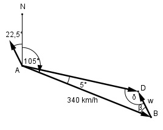

Aufgabe 222 Ein Flugzeug fliegt mit 340 km/h auf dem Kurs rw. 105°. Es wird durchWind aus SSO um 5° abgetrieben. Wie hoch ist die Windgeschwindigkeit w?

rw. 105° = rechtweisend 105° bedeutet, dass der Kurswinkel von Norden aus im Uhrzeigersinn abgetragen wird. β = 180° - 105° - 22,5° = 52,5° δ = 180° - 52,5° - 5° = 122,5° Fall SWW: Sinussatz: 340 km/h w ----------- = ------- |*sin 5° sin δ sin 5° 340 km/h * sin 5° 340 km/h * sin 5° w = -------------------- = -------------------- = sin δ sin 122,5° 340 km/h * 0,0872 = -------------------- = 0,8434 35,15 = 35,15 km/h = --------- m/s = 9,76 m/s 3,6